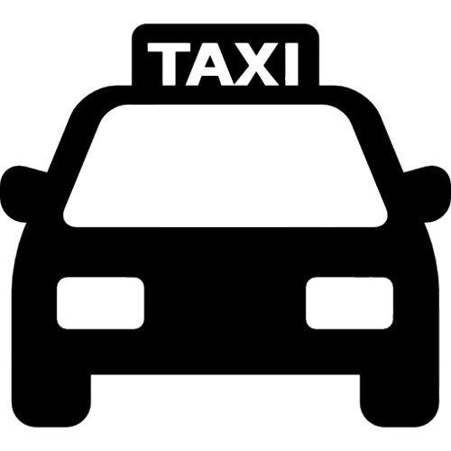

Sistema de Transporte para Estudiantes Internacionales
Opciones de Transporte para Viajar
Autobús
Transporte económico y conveniente para recorridos largos o cortos dentro de la ciudad. Ideal para estudiantes que necesitan un transporte regular.
Tren
Servicio rápido y eficiente, especialmente útil para recorrer grandes distancias entre ciudades. Confortable para trayectos largos.
Metro
Ideal para moverse rápidamente dentro de áreas urbanas. Económico y rápido, adecuado para estudiantes que viven en ciudades grandes.

Taxi
Transporte privado, ideal para viajes cortos o cuando se requiere comodidad y rapidez. Se puede compartir con otros estudiantes.
Bicicleta
Una opción ecológica y económica para moverse por la ciudad. A menudo disponible a través de servicios de alquiler de bicicletas.